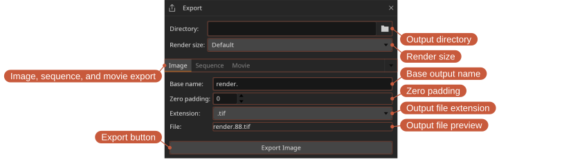
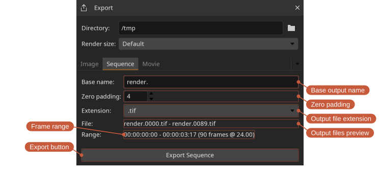
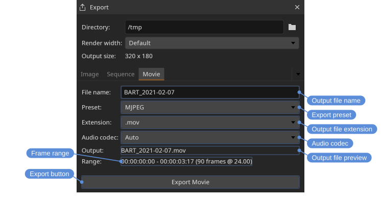

Exporting files
The Export tool writes out the current file as a single still image, a numbered image sequence, or a movie. Each kind of export has its own tab with its own options and export button.
Locations: Tools menu, Tools toolbar
Shortcut: F2

- Render width — The width of the export: Default for the size of what is being exported with no scaling, one of the presets, or Custom. Only the width is ever given; the height follows the aspect ratio of what is being exported, so nothing is squashed to fit.
- Custom width — Shown with Custom, for a width the presets do not cover.
- Output size — What the width and the aspect ratio come to between them, which is the resolution the file is written at.
- File — A preview of the output file name. Exporting over a file that is already there asks first, so nothing is overwritten without saying so.
Image
The Image tab exports just the current frame as a single still image. The frame number in the output file name follows the playhead.
Sequence
The Sequence tab exports the in/out range as a numbered image sequence. Set Zero padding to control the number of digits in the frame numbers (for example, a padding of 4 produces render.0001.exr). The File preview shows the first and last files of the sequence. Exporting asks first if any frame of the range is already on disk.

Movie
The Movie tab exports the in/out range as a movie file, encoded with the selected Codec. If the source has audio it is included in the movie; the Audio codec defaults to Auto, which lets the file format choose, or a specific codec can be selected. The audio codec option is disabled when the source has no audio.

Available extensions depend on how DJV was built. Image and sequence exports typically support .exr, .png, .tif, and .tiff; movie exports typically support .mov, .mp4, and .m4v.
Exports respect the current layer, playback speed, in/out range, and color settings. A comparison is exported the way the viewport shows it: a side by side comparison of two files writes both of them, at the size the comparison comes to, and Default render size follows that rather than the A file on its own.